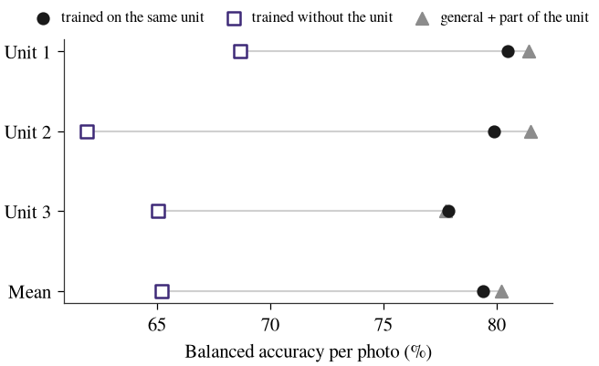
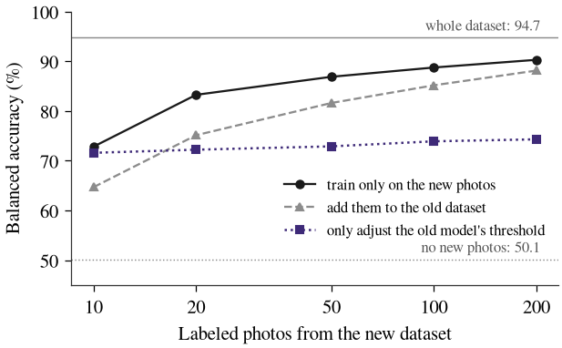

How soybean defect classifiers generalize across equipment: a study with open data
Thalles Paul Leandro Mota
Abstract. In Brazil, every truckload of soybeans is graded by a person who picks out the damaged beans by eye. Machines that photograph each bean promise the same criterion everywhere, but only if the model still works on a machine it was not trained on. I measured how much it doesn't, using two public datasets with 10,343 images and treating three regions as three machines. On a region it had never seen, the model lost 14.2 points of balanced accuracy, the average hit rate across classes, and got them back once some of that region's samples went into training. On a dataset from another source it fell to chance, but just 50 labeled photos from that source brought it back to 86.9. Splitting the photos one by one, instead of by tray, would have inflated the results by 4.4 points. Of the six predictions I wrote down before the tests, four held up.
My role: study design, data audit, modeling and evaluation. Tools: Python · PyTorch · timm · scikit-learn · pandas · matplotlib · LaTeX. Code: private; demonstration on request.
1. Why I studied this
Automatic grading of soybeans has a bottleneck that a single accuracy figure hides. The same model, moved to another machine, sees different lighting, a different camera angle and beans from another region, and its errors change in ways that are rarely measured. I wanted to look at that problem with the same rigor I use in my research, and to see how far it can be understood and reduced using only open data.
In Brazil, a grader takes a sample from every truckload, separates the damaged beans by eye and weighs each group, following the Ministry of Agriculture's standard. Machines that photograph each bean promise the same criterion at every site, but only if the model keeps its performance at a site where it was never trained.
2. How I set it up
I used two open datasets. SOYPR has 4,830 images from three regions of Paraná, in seven classes, each region labeled by its own specialist. Here each region stands in for a machine, and the charts call them units 1 to 3. Mendeley has 5,513 images from another source, under a CC BY 4.0 license; when I audited it I found 371 pairs of repeated images, so I kept one of each.
The most important decision came before any model existed. Each bean is photographed three times, and the three photos are nearly identical. Split the data photo by photo and the model can recognize a bean it has already seen instead of its defect. So I split training and test by physical tray and froze that split with a checksum. The models were tuned without touching the test set and compared on the same trays over 20 repetitions, and I wrote down six predictions before running the tests.

3. What I found
That shortcut is not a detail: splitting photo by photo inflated balanced accuracy by 4.4 points, in all three regions. On a region it had never seen, the honest model fell from 79.4 to 65.2, and it fell in all 20 repetitions. Once part of that region's trays went into training, the general model was back at 80.2. The worst case was the "dirty" class in region 2, which dropped from 100% to 9% without that region's data. The dataset's authors call this class subjective, which suggests that each region's grader draws the line in a different place.
A different image source was a harder wall. Trained on one dataset and tested on the other, the model dropped to chance, and adjusting its decision threshold was not enough (74.3 even with 200 photos). What did help was surprisingly little data: 50 labeled photos from the new source, used on their own, brought balanced accuracy to 86.9, and 200 brought it to 90.3. A newer network, DINOv2, scored 4.2 points higher than the original paper's network on a new region (69.4 against 65.2), but did not close the gap.

The model's own doubt turned out to be a good guide for human review, but only on a known machine: having a person check the 10% most doubtful beans raised accuracy from 91.4 to 95.2. On a new machine it helps little, because there the model is wrong with confidence. Four of my six predictions held up; the two that failed both assumed that mechanical damage would be the hardest class, and it was not.
4. What this means in practice
With a known machine, two networks working together plus a person reviewing the 10% most doubtful beans is a sound setup. A new machine should be validated before use, and what worked here was adding samples from that machine to training. A different image source needs its own labeled photos, and 50 to 200 go a long way. Whatever the setup, evaluate by sample and by machine, never photo by photo.
5. Limitations
The “machines” in this study are really photographed regions, so I cannot separate the effect of the equipment from that of the region or the grader. The comparison between datasets only covers intact versus defective, because the two datasets do not share the same classes.
References
- Lin, W. et al. (2023). Soybean image dataset for classification. Data in Brief, 48:109300.
- MAPA (2007). Instrução Normativa n. 11, de 15 de maio de 2007: Regulamento Técnico da Soja.
- Pereira, G. M. L., Foleis, J. H., Brito Jr., A. S. and Bertolini, D. (2024). A database for soybean seed classification. In 37th SIBGRAPI. IEEE.